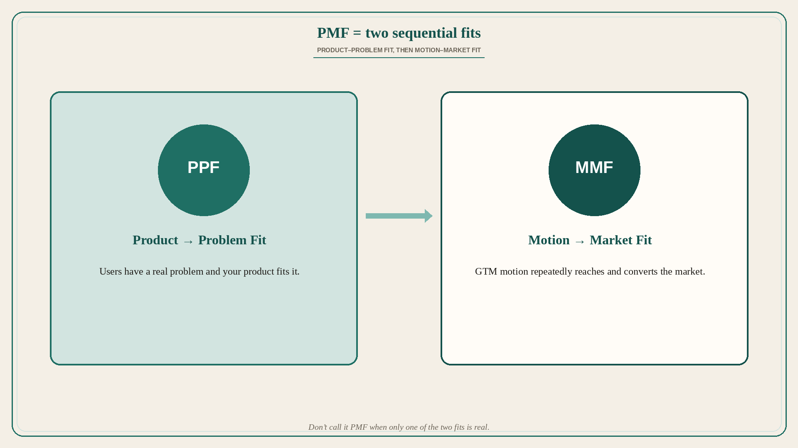

PMF is two fits: Product–Problem then Motion–Market
Source: Sajith Pai (@sajithpai)
original post
What it claims
The Busy Founder’s Guide to PMF frames product-market fit as not a singular fit but two sequential fits. First achieve Product to Problem Fit (PPF), then achieve (Go-to-Market) Motion to Market Fit (MMF). That TL;DR is the full claim in the API text; a framework diagram is attached as an image for the longer guide. (Source post is primarily a carousel/thread image — the detailed process bullets live in the image and are not reconstructed here.)
Why it matters for a PO
Teams declare “we have PMF” when users like the product (PPF) but the motion does not yet fit the market (MMF) — or they pour GTM spend before the problem fit is real. A PO who sequences PPF then MMF stops mixing “users love it” with “we can repeatedly reach and convert the market.”
3 takeaways
- PMF is not one fit; it is two sequential fits.
- First: Product–Problem Fit (PPF).
- Then: Motion–Market Fit (MMF) — GTM motion that fits the market.
Practice this week
Score your product this week: PPF strong/weak, MMF strong/weak. If PPF is weak, cut acquisition experiments and return to problem evidence. If PPF is strong and MMF is weak, design one motion test (channel + message + conversion) — do not call it full PMF yet.